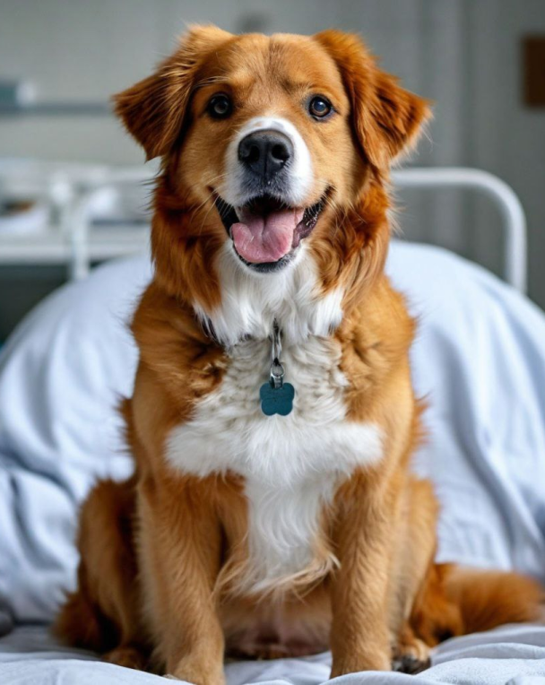
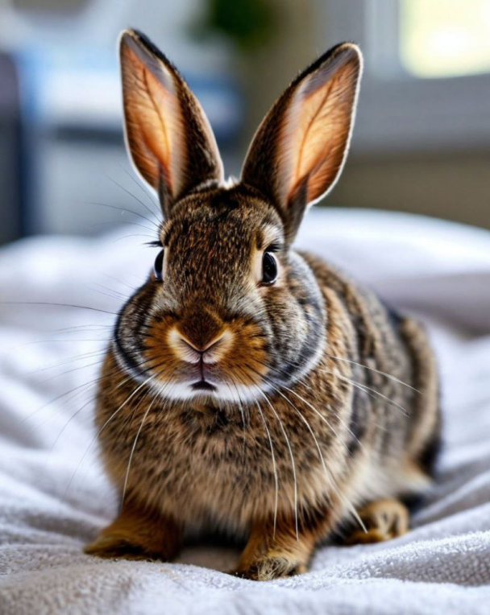
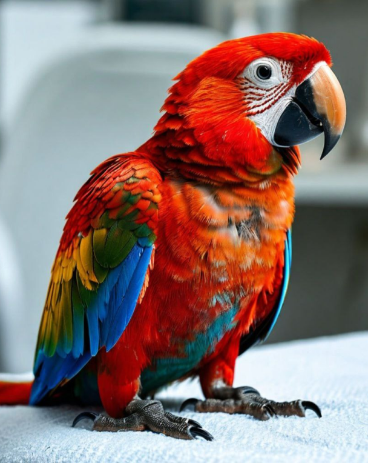

Критерии для собаки-донора
Чтобы собака могла стать донором и спасти чью-то жизнь, она должна соответствовать определенным критериям.
- Возраст: Собака должна быть в возрасте от 1 года до 7-8 лет.
- Вес: Минимальный вес собаки для донорства - около 10 кг.
- Общее состояние: Собака должна быть здорова, без хронических заболеваний, инфекций, паразитов.
- Вакцинация: Собака должна быть вакцинирована от основных заболеваний.
- Паразитарная защита: Собака должна быть обработана от внутренних и внешних паразитов.

Критерии для кошки-донора
Чтобы кошка могла стать донором и спасти чью-то жизнь, она должна соответствовать определенным критериям.
- Возраст: Кошка должна быть в возрасте от 1 года до 7-8 лет.
- Вес: Минимальный вес кошки для донорства - около 4 кг.
- Общее состояние: Кошка должна быть здорова, без хронических заболеваний, инфекций, паразитов.
- Вакцинация: Кошка должна быть вакцинирована от основных заболеваний.
- Паразитарная защита: Кошка должна быть обработана от внутренних и внешних паразитов.

Критерии для кролика-донора
Чтобы кролик мог стать донором и спасти чью-то жизнь, он должен соответствовать определенным критериям.
- Возраст: Кролик должен быть в возрасте от 1 года до 5 лет.
- Вес: Минимальный вес кролика для донорства - около 2 кг.
- Общее состояние: Кролик должен быть здоров, без хронических заболеваний, инфекций, паразитов.
- Вакцинация: Кролик должен быть вакцинирован от миксоматоза и ВГБК.
- Паразитарная защита: Кролик должен быть обработан от внутренних и внешних паразитов.

Критерии для попугая-донора
Чтобы попугай мог стать донором и спасти чью-то жизнь, он должен соответствовать определенным критериям.
- Возраст: Попугай должен быть в возрасте от 1 года до 5 лет (зависит от вида).
- Вес: Минимальный вес зависит от вида, но должен быть в пределах нормы.
- Общее состояние: Попугай должен быть здоров, без хронических заболеваний, инфекций, паразитов.
- Вакцинация: Попугай должен быть вакцинирован от основных заболеваний для его вида.
- Паразитарная защита: Попугай должен быть обработан от внутренних и внешних паразитов.
